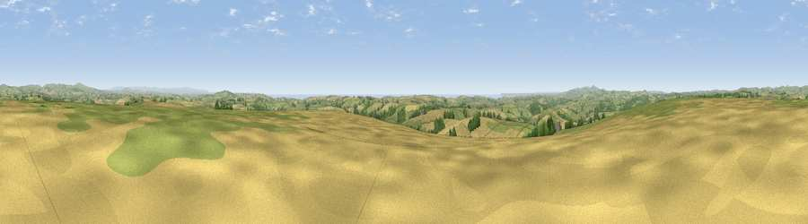

Viewpoint near Lanreath
#2347 in England · top 5% of its area beats it · near LanreathWhere it is
The exact computed spot (SX 19175 59325). Click the marker for map links.
The view, rendered

A 360° render of this exact spot computed from the terrain model, tree cover and land cover — summer colours, afternoon light, calibrated against photographs of famous viewpoints. Real trees, hedges and buildings will differ in detail.
The panorama
Grey silhouette: terrain skyline in each direction (720 bearings, Earth curvature and refraction included). Dashed green: skyline with trees (+15 m) and buildings (+8 m) as obstacles. Blue strip: how far the ground is visible on each bearing.
Where the view opens
Wedge length = distance to the farthest visible ground on that bearing (vegetation-aware). Rings at 10, 25 and 50 km.
What fills the view
55% grassland · 29% cropland · 11% woodland · 4% water · 1% built-up
Angular shares of the visible panorama (visual magnitude), not map area. Landscape diversity 0.48 (0–1 Shannon).
Key numbers
More beautiful places nearby
The staircase of upgrades: each row has a higher view potential than everything closer. Driving times are estimates from straight-line distance, calibrated against real road routing — check an actual route before setting out.
| Place | Direction | Drive | Score |
|---|---|---|---|
| Viewpoint near Lansallos | S · 8 km | ~17 min | 81.1 |
| Viewpoint near Polperro | S · 9 km | ~17 min | 81.9 |
| Viewpoint near Polperro | S · 9 km | ~17 min | 83.7 |
| Pencarrow Head | SSW · 9 km | ~18 min | 86.0 |
| Viewpoint near Stenalees | W · 19 km | ~33 min | 88.0 |
| Viewpoint near Crackington Haven | NNW · 35 km | ~54 min | 88.1 |
| Viewpoint near Combe Martin | NNE · 97 km | ~122 min | 88.9 |
| Holdstone Hill | NNE · 98 km | ~123 min | 90.2 |
50.40591, -4.54605 · source: screening · position refined by local search. Computed location — check access rights before visiting.